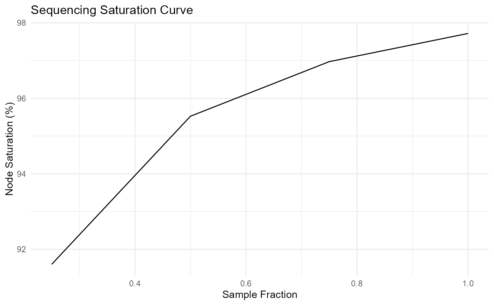

Simulate Sequencing Saturation Curve
SequenceSaturationCurve.RdThis function simulates the effect of lower read depth on the sequencing saturation of a PNA sample. This can be used to create a saturation curve for a given sample. The function iteratively downsamples the edgelist for a small number of components and records the number of edges, proteins, and reads. The saturation of the graph is calculated at each step.
Arguments
- edgelist
A tibble containing the edgelist with the following columns:
component: The component number.umi1: The UMI of the first nodeumi2: The UMI of the second node.read_count: The number of reads supporting the edge.
- sample_fracs
A vector of sample fractions to downsample the edgelist. The resulting sizes will not be exact, since some parts of the graph may be disconnected upon downsampling. The function will keep the largest connected component.
- n_comps
The number of components to sample from the edgelist.
Value
A tibble with the following columns:
sample_size: The number of reads in the downsampled edgelist.sample_frac: The fraction of reads in the downsampled edgelist.graph_edges: The number of edges in the downsampled graph.graph_proteins: The number of proteins in the downsampled graph.graph_reads: The number of reads in the downsampled graph.graph_node_saturation: The sequencing saturation of the graph based on the number of proteins.graph_edge_saturation: The sequencing saturation of the graph based on the number of edges.
Examples
library(dplyr)
library(ggplot2)
# Here we are reformatting an MPX edgelist to match the expected input
# for a PNA edgelist
# Load the edgelist, and rename to match PNA input
edgelist <-
ReadMPX_edgelist(system.file("extdata/five_cells", "five_cells.pxl",
package = "pixelatorR"
)) %>%
rename(umi1 = upia, umi2 = upib, read_count = count)
set.seed(37)
seqsat <- SequenceSaturationCurve(edgelist,
sample_fracs = c(1, 0.75, 0.5, 0.25),
n_comps = 2L
)
# Calculate the mean sequencing saturation for each sample fraction
seqsat_mean <-
seqsat %>%
group_by(sample_frac) %>%
summarise(
mean_node_saturation = mean(graph_node_saturation),
mean_edge_saturation = mean(graph_edge_saturation)
)
ggplot(seqsat_mean, aes(x = sample_frac, y = mean_node_saturation)) +
geom_line() +
labs(
title = "Sequencing Saturation Curve",
x = "Sample Fraction",
y = "Node Saturation (%)"
) +
theme_minimal()

ggplot(seqsat_mean, aes(x = sample_frac, y = mean_edge_saturation)) +
geom_line() +
labs(
title = "Sequencing Saturation Curve",
x = "Sample Fraction",
y = "Node Saturation (%)"
) +
theme_minimal()